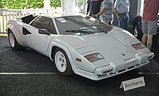

Lanborghini Countach
Swoją nazwę samochód zawdzięcza, pochodzącemu z języka piemonckiego, wyrażeniu, którego używał jeden z członków zespołu pracującego przy budowie prototypu. Słowo to miało wyrażać zdumienie, zachwyt
Nadwozie samochodu zaprojektował Marcello Gandini z Bertone, który pracował również przy wcześniejszych modelach Lamborghini. Samochód charakteryzował się otwieranymi do góry drzwiami. Zaprezentowany w Genewie żółty egzemplarz miał futurystyczne wnętrze, pozbawione analogowych wskaźników. Silnik, przeniesienie napędu i cała konstrukcja nadwozia były dziełem inżynierów Lamborghini pod kierownictwem Paolo Stanzaniego. Płytę podłogową wykonano ze stali, natomiast układ napędowy zbudowano z magnezu. Silnik zamontowano centralnie, wzdłużnie. Miał 5 litrów pojemności skokowej i 12 cylindrów w układzie V.
Zaprezentowany w 1971 Countach LP500 został wybrany na następcę Miury, jednak samochodu nie wprowadzono do sprzedaży ze względu na problemy techniczne. Najpoważniejszym z nich było przegrzewanie się silnika. Modyfikacja układu chłodzącego nic nie dała, dlatego też zrezygnowano z 5-litrowego silnika na rzecz mniejszego o pojemności 3,9 litra z Miury. Lecz silnik dalej miał problemy z przegrzewaniem się, więc powiększono istniejące wloty powietrza i dodano nowe za drzwiami.
Problemy techniczne opóźniły wprowadzenie Countacha do produkcji o 3 lata
Powstały dwa prototypy. Pierwszy, czerwony trafił do kierowcy testowego Lamborghini. Natomiast drugi, zielony został zaprezentowany w 1973 w Genewie i jest uznawany za pierwszy produkcyjny egzemplarz tego modelu. Obecnie samochód znajduje się w Muzeum Lamborghini. Sprzedaż Countacha LP400 zaczęła się 11 kwietnia 1974.